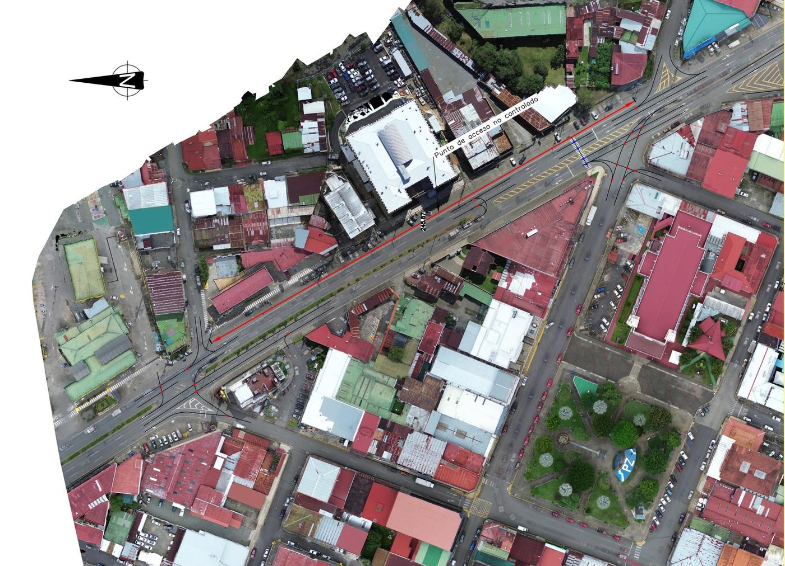
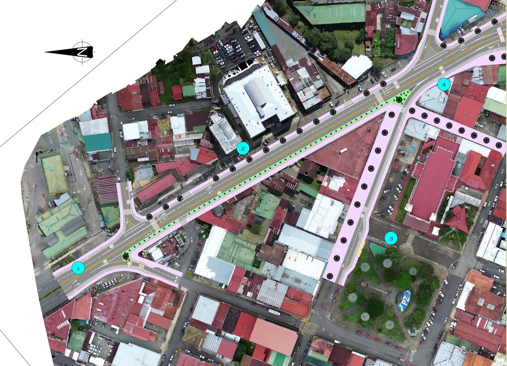
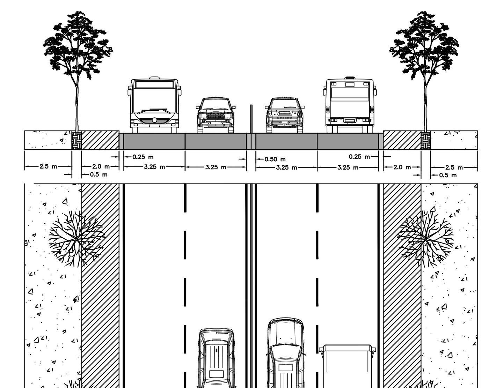
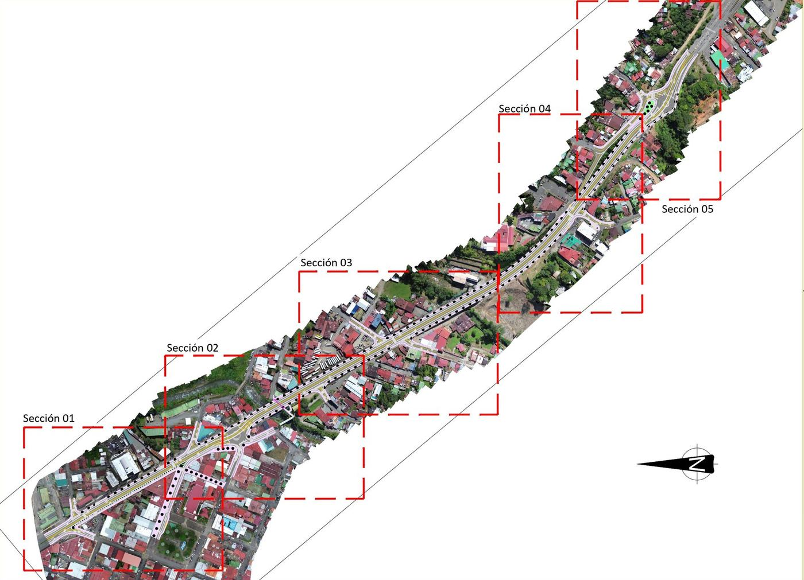

Complete Street on National Route 2
A 1.5 km redesign of the Inter-American Highway through San Isidro de El General, turning a four-lane, car-first corridor into a street for people who walk, cycle, take the bus and drive.
National Route 2 crosses the urban core of Pérez Zeledón with a two-way centre turn lane, dozens of uncontrolled accesses and no room for bicycles. COSEVI crash maps put the canton's worst clusters on this stretch. Using municipal counts (MDPZ, 2021), aerial imagery and field visits, I mapped every vehicle conflict point and designed a complete-street alternative.
The design removes all left turns along the corridor and concentrates turning movements in two roundabouts. Lanes narrow to 3.25 m, enough for the articulated design truck with 0.65 m between vehicles, and below the 3.65 m the SIECA manual prefers, as a deliberate traffic-calming measure. Each side gets a 2.0 m protected bike lane behind a 10 cm curb, a 2.5 m sidewalk and a planted strip of shade trees in a valley where temperatures run from 19 to 30 °C. Crossings follow the desire lines seen on site, and 2,120 m of open roadside ditch become buried storm pipe.
I modelled the corridor in Civil 3D, ran SUMO micro-simulations for today's traffic and for 2035, and priced two scenarios, with and without two 140 m grade separations, including a social payback based on crash costs. The simulations also showed the limit of the design: without better transit and a heavy-vehicle bypass, the travel-time gains fade within ten years.


Existing conflictsProposed

tienes el video explicativo del TFM (VideoExplicativo_TFM.mp4, 47 MB). Un clip de 20–30 s, o 2–3 capturas de la simulación en SUMO, mostraría el análisis de tráfico, que hoy solo se describe en texto. Si me pasas el clip recortado (menos de 15 MB) lo integro aquí.